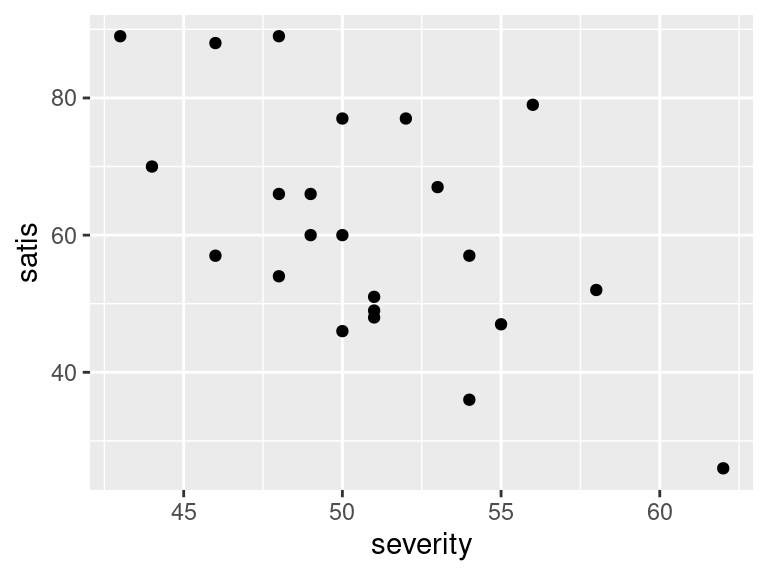
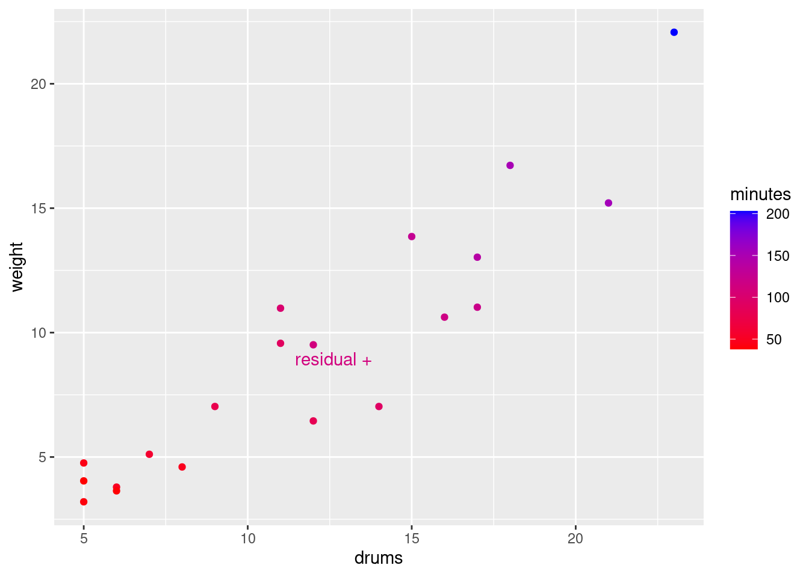
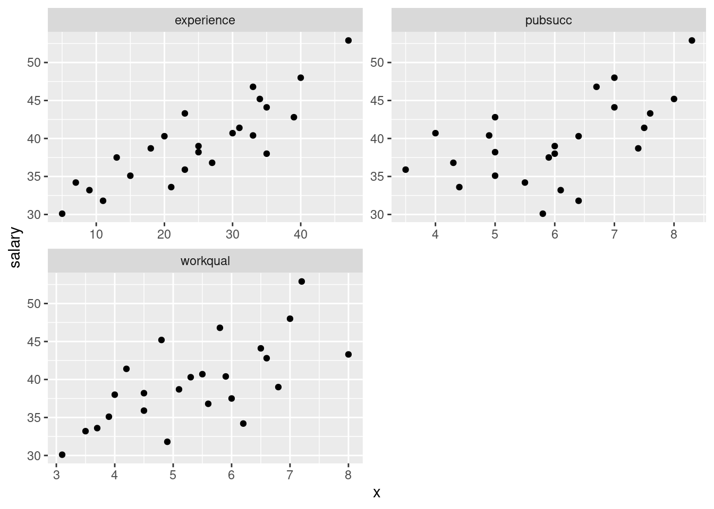
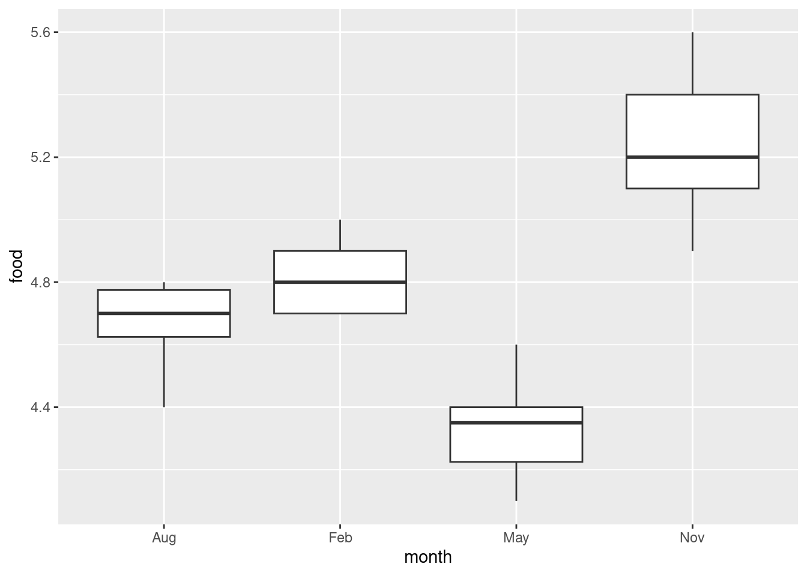
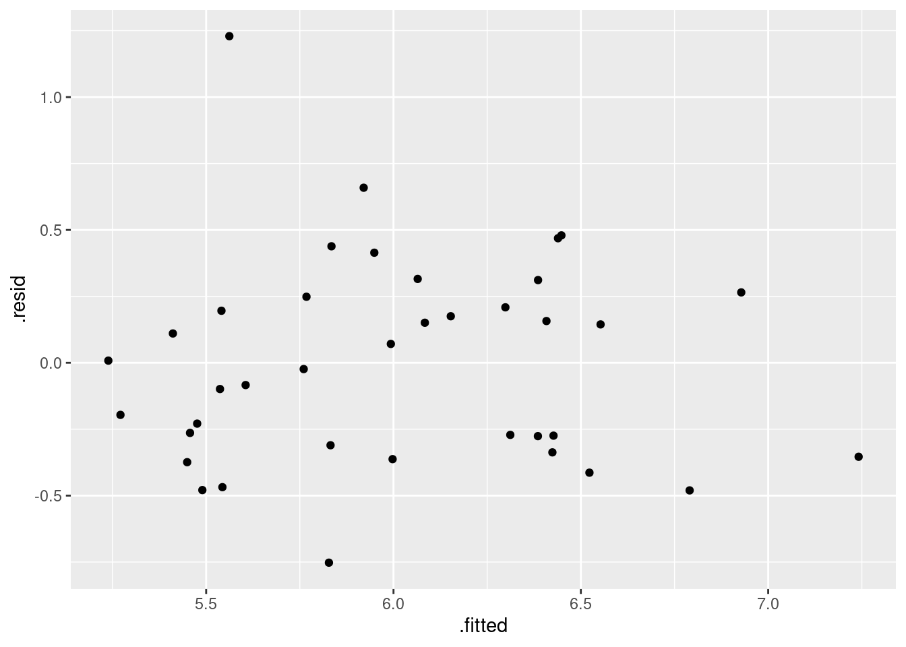

Chapter 19 Multiple regression
library(tidyverse)19.1 Being satisfied with hospital
A hospital administrator collects data to study the
effect, if any, of a patient’s age, the severity of their
illness, and their anxiety level, on the patient’s satisfaction with
their hospital experience. The data, in the file
link, are
for 46 patients in a survey. The columns are: patient’s satisfaction
score satis, on a scale of 0 to 100; the patient’s age (in
years), the severity of the patient’s illness (also on a
0–100 scale), and the patient’s anxiety score on a standard
anxiety test (scale of 0–5). Higher scores mean greater satisfaction,
increased severity of illness and more anxiety.
Read in the data and check that you have four columns in your data frame, one for each of your variables.
* Obtain scatterplots of the response variable
satisagainst each of the other variables.In your scatterplots of (here), which relationship appears to be the strongest one?
* Create a correlation matrix for all four variables. Does your strongest trend of the previous part have the strongest correlation?
Run a regression predicting satisfaction from the other three variables, and display the output.
Does the regression fit well overall? How can you tell?
Test the null hypothesis that none of your explanatory variables help, against the alternative that one or more of them do. (You’ll need an appropriate P-value. Which one is it?) What do you conclude?
The correlation between
severityandsatisis not small, but in my regression I found thatseveritywas nowhere near significant. Why is this? Explain briefly.Carry out a backward elimination to determine which of
age,severityandanxietyare needed to predict satisfaction. What do you get? Use \(\alpha = 0.10\).
19.2 Handling shipments of chemicals
The data in link are on shipments of chemicals in drums that arrive at a warehouse. In order, the variables are:
the number of minutes required to handle the shipment
the number of drums in the shipment
the total weight of the shipment, in hundreds of pounds.
The data set has two features: no column names, and data aligned in columns (that is, more than one space between data values). Read the data in, giving the columns suitable names. To do this, you may have to consult an appropriate help file, or do some searching, perhaps of one of the other questions on this assignment.
Fit a regression predicting the number of minutes required to handle a shipment from the other two variables. Display the results.
Explain carefully but briefly what the slope coefficients for the two explanatory variables represent. Do their signs (positive or negative) make practical sense in the context of handling shipments of chemicals?
Obtain plots of residuals against fitted values, residuals against explanatory variables, and a normal quantile plot of the residuals.
Do you have any concerns, looking at the residual plots? Explain briefly.
19.3 Salaries of mathematicians
A researcher in a scientific foundation wanted to evaluate the relationship between annual salaries of mathematicians and three explanatory variables:
an index of work quality
number of years of experience
an index of publication success.
The data can be found at link. Data from only a relatively small number of mathematicians were available.
Read in the data and check that you have a sensible number of rows and the right number of columns. (What does “a sensible number of rows” mean here?)
Make scatterplots of
salaryagainst each of the three explanatory variables. If you can, do this with oneggplot.Comment briefly on the direction and strength of each relationship with
salary.* Fit a regression predicting salary from the other three variables, and obtain a
summaryof the results.How can we justify the statement “one or more of the explanatory variables helps to predict salary”? How is this consistent with the value of R-squared?
Would you consider removing any of the variables from this regression? Why, or why not?
Do you think it would be a mistake to take both of
workqualandpubsuccout of the regression? Do a suitable test. Was your guess right?Back in part (here), you fitted a regression with all three explanatory variables. By making suitable plots, assess whether there is any evidence that (i) that the linear model should be a curve, (ii) that the residuals are not normally distributed, (iii) that there is “fan-out”, where the residuals are getting bigger in size as the fitted values get bigger? Explain briefly how you came to your conclusions in each case.
19.4 Predicting GPA of computer science students
The file link contains some measurements of academic achievement for a number of university students studying computer science:
High school grade point average
Math SAT score
Verbal SAT score
Computer Science grade point average
Overall university grade point average.
Read in the data and display it (or at least the first ten lines).
* Make a scatterplot of high school GPA against university GPA. Which variable should be the response and which explanatory? Explain briefly. Add a smooth trend to your plot.
Describe any relationship on your scatterplot: its direction, its strength and its shape. Justify your description briefly.
* Fit a linear regression for predicting university GPA from high-school GPA and display the results.
Two students have been admitted to university. One has a high school GPA of 3.0 and the other a high school GPA of
3.5. Obtain suitable intervals that summarize the GPAs that each of these two students might obtain in university.* Now obtain a regression predicting university GPA from high-school GPA as well as the two SAT scores. Display your results.
Test whether adding the two SAT scores has improved the prediction of university GPA. What do you conclude?
Carry out a backward elimination starting out from your model in part (here). Which model do you end up with? Is it the same model as you fit in (here)?
These students were studying computer science at university. Do you find your backward-elimination result sensible or surprising, given this? Explain briefly.
19.5 Fish and mercury
Eating fish is generally healthy, but sometimes the fish is contaminated with mercury. What might affect the amount of mercury in a fish? Large-mouth bass were studied in Florida lakes to examine factors that might affect the amount of mercury contamination. 38 lakes were used for the study. Water samples were taken from each lake and analyzed. Also, samples of fish were caught in each lake and the mercury concentration in their muscle tissue was measured. The resulting data are in http://ritsokiguess.site/datafiles/mercury.txt, separated by single spaces. The variables measured were as follows:
- standardized mercury level (parts per million in 3-year-old fish)
- alkalinity of water (milligrams per litre)
- calcium level of water (milligrams per litre)
- pH of water (standard scale; see eg. this)
Read in and display (some of) the data.
Plot the mercury levels against each of the explanatory variables.
Describe any trends (or lack thereof) that you see on your graphs.
Concerned by some of what you see on your plots, you consult with a fisheries scientist, who says that using the logs of
alkalinityandcalciumare often used in modelling this kind of data. Add columns containing the logs of these two variables to your dataframe, and run a regression predictingmercuryfromphand the two new variables. Display the output from your regression.What might you learn from running Box-Cox here? Explain briefly, then run it (on the same variables as your regression above) and describe what the results tell you.
Using the results of the Box-Cox procedure and your previous work in the question, what seems to be the most appropriate regression now? Fit it, and display the results.
Obtain all the standard residual plots (the ones we have seen in this course) for this model. Describe any problems you see.
My solutions follow:
19.6 Being satisfied with hospital
A hospital administrator collects data to study the
effect, if any, of a patient’s age, the severity of their
illness, and their anxiety level, on the patient’s satisfaction with
their hospital experience. The data, in the file
link, are
for 46 patients in a survey. The columns are: patient’s satisfaction
score satis, on a scale of 0 to 100; the patient’s age (in
years), the severity of the patient’s illness (also on a
0–100 scale), and the patient’s anxiety score on a standard
anxiety test (scale of 0–5). Higher scores mean greater satisfaction,
increased severity of illness and more anxiety.
- Read in the data and check that you have four columns in your data frame, one for each of your variables.
Solution
This one requires a little thought
first. The data values are aligned in columns, and so are the
column headers. Thus, read_table is what we need:
my_url <- "http://ritsokiguess.site/datafiles/satisfaction.txt"
satisf <- read_table(my_url)##
## ── Column specification ────────────────────────────────────────────────────────
## cols(
## satis = col_double(),
## age = col_double(),
## severity = col_double(),
## anxiety = col_double()
## )satisf## # A tibble: 23 × 4
## satis age severity anxiety
## <dbl> <dbl> <dbl> <dbl>
## 1 48 50 51 2.3
## 2 57 36 46 2.3
## 3 66 40 48 2.2
## 4 70 41 44 1.8
## 5 89 28 43 1.8
## 6 36 49 54 2.9
## 7 46 42 50 2.2
## 8 54 45 48 2.4
## 9 26 52 62 2.9
## 10 77 29 50 2.1
## # … with 13 more rows46 rows and 4 columns: satisfaction score (response), age, severity and anxiety (explanatory).
There is a small question about what to call the data
frame. Basically, anything other than satis will do, since
there will be confusion if your data frame has the same name as one of
its columns.
\(\blacksquare\)
- * Obtain scatterplots of the response variable
satisagainst each of the other variables.
Solution
The obvious way is to do these one after the other:
ggplot(satisf, aes(x = age, y = satis)) + geom_point()
ggplot(satisf, aes(x = severity, y = satis)) + geom_point()
ggplot(satisf, aes(x = anxiety, y = satis)) + geom_point()
This is fine, but there is also a way of getting all three plots with
one ggplot. This uses the facet_wrap trick,
but to set that up, we have to have all the \(x\)-variables in
one column, with an extra column labelling which \(x\)-variable
that value was. This uses pivot_longer. The right way to do this is
in a pipeline:
satisf %>%
pivot_longer(-satis, names_to="xname", values_to="x") %>%
ggplot(aes(x = x, y = satis)) + geom_point() +
facet_wrap(~xname, scales = "free", ncol = 2)
Steps: collect together the columns age through anxiety into one column
whose values go in x, with names in xname, then plot this new
x against satisfaction score, with a separate facet for each
different \(x\) (in xname).
What’s the difference
between facet_grid and facet_wrap? The difference is that with
facet_wrap, we are letting ggplot arrange the
facets how it wants to. In this case, we didn’t care which explanatory
variable went on which facet, just as long as we saw all of them
somewhere. Inside facet_wrap there are no dots: a
squiggle, followed by the name(s) of the variable(s) that
distinguish(es) the facets.22
The only “design” decision I made here was that the facets
should be arranged somehow in two columns, but I didn’t care which
ones should be where.
In facet_grid, you have a variable that you want to be
displayed in rows or in columns (not just in “different facets”).
I’ll show you how that works here. Since I am going to draw
two plots, I should save the long data frame first and re-use it,
rather than calculating it twice (so that I ought now to go back and
do the other one using the saved data frame, really):
satisf %>%
pivot_longer(age:anxiety, names_to="xname",
values_to="x") -> satisf.long
satisf.long## # A tibble: 69 × 3
## satis xname x
## <dbl> <chr> <dbl>
## 1 48 age 50
## 2 48 severity 51
## 3 48 anxiety 2.3
## 4 57 age 36
## 5 57 severity 46
## 6 57 anxiety 2.3
## 7 66 age 40
## 8 66 severity 48
## 9 66 anxiety 2.2
## 10 70 age 41
## # … with 59 more rowsIf, at this or any stage, you get confused, the way to un-confuse yourself is to fire up R Studio and do this yourself. You have all the data and code you need. If you do it yourself, you can run pipes one line at a time, inspect things, and so on.
First, making a row of plots, so that xname is the \(x\)
of the facets:
ggplot(satisf.long, aes(x = x, y = satis)) + geom_point() +
facet_grid(. ~ xname, scales = "free")
I find these too tall and skinny to see the trends, as on the first
facet_wrap plot.
And now, making a column of plots, with xname as \(y\):
ggplot(satisf.long, aes(x = x, y = satis)) + geom_point() +
facet_grid(xname ~ ., scales = "free")
This one looks weird because the three \(x\)-variables are on different
scales. The effect of the scales="free" is to allow the
satis scale to vary, but the x scale cannot because
the facets are all in a line. Compare this:
ggplot(satisf.long, aes(x = x, y = satis)) + geom_point() +
facet_wrap(~xname, ncol = 1, scales = "free")This time, the \(x\) scales came out different (and suitable), but I still like squarer plots better for judging relationships.
\(\blacksquare\)
- In your scatterplots of (here), which relationship appears to be the strongest one?
Solution
All the trends appear to be downward ones, but
I think satis and age is the strongest
trend. The other ones look more scattered to me.
\(\blacksquare\)
- * Create a correlation matrix for all four variables. Does your strongest trend of the previous part have the strongest correlation?
Solution
This is a matter of running the whole data frame through cor:
cor(satisf)## satis age severity anxiety
## satis 1.0000000 -0.7736828 -0.5874444 -0.6023105
## age -0.7736828 1.0000000 0.4666091 0.4976945
## severity -0.5874444 0.4666091 1.0000000 0.7945275
## anxiety -0.6023105 0.4976945 0.7945275 1.0000000Ignoring the correlations of variables with themselves, the
correlation of satisf with age, the one I picked
out, is the strongest (the most negative trend). If you picked one of
the other trends as the strongest, you need to note how close it is to
the maximum correlation: for example, if you picked satis
and severity, that’s the second highest correlation (in
size).
\(\blacksquare\)
- Run a regression predicting satisfaction from the other three variables, and display the output.
Solution
satisf.1 <- lm(satis ~ age + severity + anxiety, data = satisf)
summary(satisf.1)##
## Call:
## lm(formula = satis ~ age + severity + anxiety, data = satisf)
##
## Residuals:
## Min 1Q Median 3Q Max
## -16.954 -7.154 1.550 6.599 14.888
##
## Coefficients:
## Estimate Std. Error t value Pr(>|t|)
## (Intercept) 162.8759 25.7757 6.319 4.59e-06 ***
## age -1.2103 0.3015 -4.015 0.00074 ***
## severity -0.6659 0.8210 -0.811 0.42736
## anxiety -8.6130 12.2413 -0.704 0.49021
## ---
## Signif. codes: 0 '***' 0.001 '**' 0.01 '*' 0.05 '.' 0.1 ' ' 1
##
## Residual standard error: 10.29 on 19 degrees of freedom
## Multiple R-squared: 0.6727, Adjusted R-squared: 0.621
## F-statistic: 13.01 on 3 and 19 DF, p-value: 7.482e-05\(\blacksquare\)
- Does the regression fit well overall? How can you tell?
Solution
For this, look at R-squared, which is 0.682 (68.2%). This is one of those things to have an opinion about. I’d say this is good but not great. I would not call it “poor”, since there definitely is a relationship, even if it’s not a stupendously good one.
\(\blacksquare\)
- Test the null hypothesis that none of your explanatory variables help, against the alternative that one or more of them do. (You’ll need an appropriate P-value. Which one is it?) What do you conclude?
Solution
This one is the (global) \(F\)-test, whose P-value is at the
bottom. It translates to 0.000000000154, so this is
definitely small, and we reject the null. Thus, one or more
of age, severity and anxiety helps to
predict satisfaction. (I would like to see this last sentence,
rather than just “reject the null”.)
\(\blacksquare\)
- The correlation between
severityandsatisis not small, but in my regression I found thatseveritywas nowhere near significant. Why is this? Explain briefly.
Solution
The key thing to observe is that the \(t\)-test in the regression
says how important a variable is
given the others that are already in the regression, or, if you prefer, how much that
variable adds to the regression, on top of the ones that
are already there. So here, we are saying
that severity has nothing to add, given that the
regression already includes the others. (That is, high correlation
and strong significance don’t always go together.)
For a little more insight, look at the correlation matrix of
(here) again. The strongest trend with
satis is with age, and indeed age is
the one obviously significant variable in the regression. The
trend of severity with satis is somewhat
downward, and you might otherwise have guessed that this is strong
enough to be significant. But see that severity
also has a clear relationship with age. A patient
with low severity of disease is probably also younger, and we know
that younger patients are likely to be more satisfied. Thus
severity has nothing (much) to add.
Extra 1:
The multiple regression is actually doing something clever
here. Just looking at the correlations, it appears that all three
variables are helpful, but the regression is saying that once you
have looked at age (“controlled for age”),
severity of illness does not have an impact: the correlation of
severity with satis is as big as it is almost
entirely because of age.
This gets into the domain of “partial correlation”. If you like videos, you can
see link for
this. I prefer regression, myself, since I find it clearer.
anxiety
tells a different story: this is close to significant (or
is significant at the \(\alpha=0.10\) level), so the
regression is saying that anxiety does appear to
have something to say about satis over and above
age. This is rather odd, to my mind, since
anxiety has only a slightly stronger correlation with
satis and about the same with age as
severity does. But the regression is telling the story to
believe, because it handles all the inter-correlations, not just
the ones between pairs of variables.
I thought it would be rather interesting to do some predictions here. Let’s predict satisfaction for all combinations of high and low age, severity and anxiety. I’ll use the quartiles for high and low.
The easiest way to get those is via summary:
summary(satisf)## satis age severity anxiety
## Min. :26.00 Min. :28.00 Min. :43.00 Min. :1.800
## 1st Qu.:50.00 1st Qu.:33.00 1st Qu.:48.00 1st Qu.:2.150
## Median :60.00 Median :40.00 Median :50.00 Median :2.300
## Mean :61.35 Mean :39.61 Mean :50.78 Mean :2.296
## 3rd Qu.:73.50 3rd Qu.:44.50 3rd Qu.:53.50 3rd Qu.:2.400
## Max. :89.00 Max. :55.00 Max. :62.00 Max. :2.900and then use datagrid to make combinations for prediction:
new <- datagrid(model = satisf.1, age = c(33, 44.5),
severity = c(48, 53.5), anxiety = c(2.15, 2.4))
new## satis age severity anxiety
## 1 61.34783 33.0 48.0 2.15
## 2 61.34783 33.0 48.0 2.40
## 3 61.34783 33.0 53.5 2.15
## 4 61.34783 33.0 53.5 2.40
## 5 61.34783 44.5 48.0 2.15
## 6 61.34783 44.5 48.0 2.40
## 7 61.34783 44.5 53.5 2.15
## 8 61.34783 44.5 53.5 2.40Eight rows for the \(2^3 = 8\) combinations. Then get the predictions for these:
predictions(satisf.1, newdata = new)## rowid type predicted std.error statistic p.value conf.low conf.high
## 1 1 response 72.45391 2.844181 25.47444 3.785221e-143 66.50097 78.40685
## 2 2 response 70.30065 4.435481 15.84961 1.414492e-56 61.01709 79.58422
## 3 3 response 68.79143 4.699081 14.63934 1.575972e-48 58.95614 78.62672
## 4 4 response 66.63817 3.661656 18.19892 5.263714e-74 58.97424 74.30211
## 5 5 response 58.53525 3.370091 17.36904 1.415637e-67 51.48157 65.58893
## 6 6 response 56.38200 4.233879 13.31686 1.847055e-40 47.52038 65.24361
## 7 7 response 54.87277 4.595489 11.94057 7.271935e-33 45.25430 64.49124
## 8 8 response 52.71951 2.725614 19.34225 2.369127e-83 47.01474 58.42429
## satis age severity anxiety
## 1 61.34783 33.0 48.0 2.15
## 2 61.34783 33.0 48.0 2.40
## 3 61.34783 33.0 53.5 2.15
## 4 61.34783 33.0 53.5 2.40
## 5 61.34783 44.5 48.0 2.15
## 6 61.34783 44.5 48.0 2.40
## 7 61.34783 44.5 53.5 2.15
## 8 61.34783 44.5 53.5 2.40Extra 2: the standard errors vary quite a bit. The smallest ones are where age, severity, and anxiety are all high or all low (the last row and the first one). This is where most of the data is, because the three explanatory variables are positively correlated with each other (if you know that one of them is high, the others will probably be high too). The other standard errors are higher because there is not much data “nearby”, and so we don’t know as much about the quality of the predictions there.
Extra 3: we had to copy the quartile values into the new dataframe we were making (to predict from), which ought to have caused you some concern, since there was no guarantee that we copied them correctly. It would be better to make a dataframe with just the quartiles, and feed that into datagrid. Here’s how we can do that.
satisf %>%
summarize(across(-satis,
\(x) quantile(x, c(0.25, 0.75)))) -> d
d## # A tibble: 2 × 3
## age severity anxiety
## <dbl> <dbl> <dbl>
## 1 33 48 2.15
## 2 44.5 53.5 2.4To summarize several columns at once, use across. This one reads “for each column that is not satis, work out the first and third quartiles (25th and 75th percentiles) of it. Recall that the first input to quantile is what to compute percentiles of, and the optional23 second input is which percentiles to compute. Also, when summarize is fed a summary that is more than one number long (two quartiles, here) it will automatically be unnested longer, which happens to be exactly what we want here.
So now, we need to take the columns from here and feed them into datagrid. The way to do that is to use with:
new <- with(d, datagrid(model = satisf.1, age = age, severity = severity, anxiety = anxiety))
new## satis age severity anxiety
## 1 61.34783 33.0 48.0 2.15
## 2 61.34783 33.0 48.0 2.40
## 3 61.34783 33.0 53.5 2.15
## 4 61.34783 33.0 53.5 2.40
## 5 61.34783 44.5 48.0 2.15
## 6 61.34783 44.5 48.0 2.40
## 7 61.34783 44.5 53.5 2.15
## 8 61.34783 44.5 53.5 2.40The clunky repetition is needed because the first (eg.) age in age = age is the name that the column in new is going to get, and the second age is the thing that supplies the values to be combined (the column of d called age). This is exactly the same new that we had before, and so the predictions will be exactly the same as they were before.
\(\blacksquare\)
- Carry out a backward elimination to determine which of
age,severityandanxietyare needed to predict satisfaction. What do you get? Use \(\alpha = 0.10\).
Solution
This means starting with the regression containing all the explanatory
variables, which is the one I called satisf.1:
summary(satisf.1)##
## Call:
## lm(formula = satis ~ age + severity + anxiety, data = satisf)
##
## Residuals:
## Min 1Q Median 3Q Max
## -16.954 -7.154 1.550 6.599 14.888
##
## Coefficients:
## Estimate Std. Error t value Pr(>|t|)
## (Intercept) 162.8759 25.7757 6.319 4.59e-06 ***
## age -1.2103 0.3015 -4.015 0.00074 ***
## severity -0.6659 0.8210 -0.811 0.42736
## anxiety -8.6130 12.2413 -0.704 0.49021
## ---
## Signif. codes: 0 '***' 0.001 '**' 0.01 '*' 0.05 '.' 0.1 ' ' 1
##
## Residual standard error: 10.29 on 19 degrees of freedom
## Multiple R-squared: 0.6727, Adjusted R-squared: 0.621
## F-statistic: 13.01 on 3 and 19 DF, p-value: 7.482e-05Pull out the least-significant (highest P-value) variable, which here
is severity. We already decided that this had nothing to add:
satisf.2 <- update(satisf.1, . ~ . - severity)
summary(satisf.2)##
## Call:
## lm(formula = satis ~ age + anxiety, data = satisf)
##
## Residuals:
## Min 1Q Median 3Q Max
## -17.868 -6.649 2.506 6.445 16.120
##
## Coefficients:
## Estimate Std. Error t value Pr(>|t|)
## (Intercept) 147.0751 16.7334 8.789 2.64e-08 ***
## age -1.2434 0.2961 -4.199 0.000442 ***
## anxiety -15.8906 8.2556 -1.925 0.068593 .
## ---
## Signif. codes: 0 '***' 0.001 '**' 0.01 '*' 0.05 '.' 0.1 ' ' 1
##
## Residual standard error: 10.2 on 20 degrees of freedom
## Multiple R-squared: 0.6613, Adjusted R-squared: 0.6275
## F-statistic: 19.53 on 2 and 20 DF, p-value: 1.985e-05If you like, copy and paste the first lm, edit it to get rid
of severity, and run it again. But when I have a
“small change” to make to a model, I like to use update.
Having taken severity out, anxiety has become
significant (at \(\alpha = 0.10\)). Since all of the explanatory variables are now
significant, this is where we stop. If we’re predicting satisfaction,
we need to know both a patient’s age and their anxiety score: being
older or more anxious is associated with a decrease in satisfaction.
There is also a function step that will do this for you:
step(satisf.1, direction = "backward", test = "F")## Start: AIC=110.84
## satis ~ age + severity + anxiety
##
## Df Sum of Sq RSS AIC F value Pr(>F)
## - anxiety 1 52.41 2064.0 109.43 0.4951 0.4902110
## - severity 1 69.65 2081.2 109.62 0.6579 0.4273559
## <none> 2011.6 110.84
## - age 1 1706.67 3718.3 122.97 16.1200 0.0007404 ***
## ---
## Signif. codes: 0 '***' 0.001 '**' 0.01 '*' 0.05 '.' 0.1 ' ' 1
##
## Step: AIC=109.43
## satis ~ age + severity
##
## Df Sum of Sq RSS AIC F value Pr(>F)
## <none> 2064.0 109.43
## - severity 1 402.78 2466.8 111.53 3.9029 0.0621629 .
## - age 1 1960.56 4024.6 122.79 18.9977 0.0003042 ***
## ---
## Signif. codes: 0 '***' 0.001 '**' 0.01 '*' 0.05 '.' 0.1 ' ' 1##
## Call:
## lm(formula = satis ~ age + severity, data = satisf)
##
## Coefficients:
## (Intercept) age severity
## 166.591 -1.260 -1.089with the same result.24 This function doesn’t actually use P-values;
instead it uses a thing called AIC. At each step, the variable with
the lowest AIC comes out, and when <none> bubbles up to the
top, that’s when you stop. The test="F" means
“include an \(F\)-test”, but the procedure still uses AIC (it just shows you an
\(F\)-test each time as well). In this case, the other variables were
in the same order throughout, but they don’t have to be (in the same
way that removing one variable from a multiple regression can
dramatically change the P-values of the ones that remain). Here, at
the first step, <none> and anxiety were pretty
close, but when severity came out, taking out nothing was a
lot better than taking out anxiety.
The test="F" on the end gets you the P-values. Using the
\(F\)-test is right for regressions; for things like logistic regression
that we see later, test="Chisq" is the right one to
use.25
\(\blacksquare\)
19.7 Handling shipments of chemicals
The data in link are on shipments of chemicals in drums that arrive at a warehouse. In order, the variables are:
the number of minutes required to handle the shipment
the number of drums in the shipment
the total weight of the shipment, in hundreds of pounds.
- The data set has two features: no column names, and data aligned in columns (that is, more than one space between data values). Read the data in, giving the columns suitable names. To do this, you may have to consult an appropriate help file, or do some searching, perhaps of one of the other questions on this assignment.
Solution
The alignment of columns means that we need to use
read_table. Once you’ve figured that out, you can
search for help by typing ?read_table in the Console
window (the help will appear bottom right), or you can put the
same thing into an R Notebook code chunk, and when you run the
chunk, the help will be displayed. (Press control-shift-1 to go
back to the notebook.)
Or you can Google it, of course.
The key observation is that you need to supply some column names
in col_names, like this:
my_url <- "http://statweb.lsu.edu/EXSTWeb/StatLab/DataSets/NKNWData/CH06PR09.txt"
cols <- c("minutes", "drums", "weight")
chemicals <- read_table(my_url, col_names = cols)##
## ── Column specification ────────────────────────────────────────────────────────
## cols(
## minutes = col_double(),
## drums = col_double(),
## weight = col_double()
## )chemicals## # A tibble: 20 × 3
## minutes drums weight
## <dbl> <dbl> <dbl>
## 1 58 7 5.11
## 2 152 18 16.7
## 3 41 5 3.2
## 4 93 14 7.03
## 5 101 11 11.0
## 6 38 5 4.04
## 7 203 23 22.1
## 8 78 9 7.03
## 9 117 16 10.6
## 10 44 5 4.76
## 11 121 17 11.0
## 12 112 12 9.51
## 13 50 6 3.79
## 14 82 12 6.45
## 15 48 8 4.6
## 16 127 15 13.9
## 17 140 17 13.0
## 18 155 21 15.2
## 19 39 6 3.64
## 20 90 11 9.57I like to define my URL and column names up front. You can define
either of them in the read_table, but it makes that line
longer. Up to you.
There is no skip here, because the data file starts right
away with the data and we want to use all the values: we are
adding names to what’s in the data file. If you used
skip, you will be one observation short all the way through,
and your output will be slightly different from mine all the way
through.
Use any names you like, but they should resemble what the columns actually represent.
\(\blacksquare\)
- Fit a regression predicting the number of minutes required to handle a shipment from the other two variables. Display the results.
Solution
minutes.1 <- lm(minutes ~ drums + weight, data = chemicals)
summary(minutes.1)##
## Call:
## lm(formula = minutes ~ drums + weight, data = chemicals)
##
## Residuals:
## Min 1Q Median 3Q Max
## -8.8353 -3.5591 -0.0533 2.4018 15.1515
##
## Coefficients:
## Estimate Std. Error t value Pr(>|t|)
## (Intercept) 3.3243 3.1108 1.069 0.3
## drums 3.7681 0.6142 6.135 1.10e-05 ***
## weight 5.0796 0.6655 7.632 6.89e-07 ***
## ---
## Signif. codes: 0 '***' 0.001 '**' 0.01 '*' 0.05 '.' 0.1 ' ' 1
##
## Residual standard error: 5.618 on 17 degrees of freedom
## Multiple R-squared: 0.9869, Adjusted R-squared: 0.9854
## F-statistic: 641.6 on 2 and 17 DF, p-value: < 2.2e-16\(\blacksquare\)
- Explain carefully but briefly what the slope coefficients for the two explanatory variables represent. Do their signs (positive or negative) make practical sense in the context of handling shipments of chemicals?
Solution
The slope coefficient for drums is 3.77; this means that
a shipment with one extra drum (but the same total weight) would
take on average 3.77 minutes longer to handle. Likewise, the slope
coefficient for weight is 5.08, so a shipment that
weighs 1 hundred more pounds but has the same number of drums
will take 5.08 more minutes to handle.
Or “each additional drum, all else equal, will take 3.77 more minutes to handle”, or similar wording. You have to get at two
things: a one-unit increase in the explanatory variable going with
a certain increase in the response, and also the “all else equal” part. How you say it is up to you, but you need to say it.
That was two marks. The third one comes from noting that both
slope coefficients are positive, so making a shipment either
contain more drums or weigh more makes the handling time longer as
well. This makes perfect sense, since either kind of increase
would make the shipment more difficult to handle, and thus take
longer.
I was not asking about P-values. There isn’t really much to
say about those: they’re both significant, so the handling time
depends on both the total weight and the number of drums. Removing
either from the regression would be a mistake.
\(\blacksquare\)
- Obtain plots of residuals against fitted values, residuals against explanatory variables, and a normal quantile plot of the residuals.
Solution
These are the standard plots from a multiple regression. The second one requires care, but the first and last should be straightforward. Residuals against fitted values:
ggplot(minutes.1, aes(x = .fitted, y = .resid)) + geom_point()
The tricky part about the second one is that the \(x\)-values and the
residuals come from different data frames, which has to get expressed
in the ggplot. The obvious way is to do the two plots (one
for each explanatory variable) one at a time:
ggplot(minutes.1, aes(x = chemicals$drums, y = .resid)) + geom_point()
and
ggplot(minutes.1, aes(x = chemicals$weight, y = .resid)) + geom_point()
What would also work is to make a data frame first with the things to plot:
dd <- tibble(weight = chemicals$weight, drums = chemicals$drums, res = resid(minutes.1))and then:
ggplot(dd, aes(x = weight, y = res)) + geom_point()
and similarly for drums. The resid with the model
name in brackets seems to be necessary.
Another way to approach this is augment from
broom. That does this:
library(broom)
d <- minutes.1 %>% augment(chemicals)
as_tibble(d)## # A tibble: 20 × 9
## minutes drums weight .fitted .resid .hat .sigma .cooksd .std.resid
## <dbl> <dbl> <dbl> <dbl> <dbl> <dbl> <dbl> <dbl> <dbl>
## 1 58 7 5.11 55.7 2.34 0.0913 5.76 0.00641 0.437
## 2 152 18 16.7 156. -4.08 0.194 5.68 0.0524 -0.809
## 3 41 5 3.2 38.4 2.58 0.131 5.75 0.0122 0.493
## 4 93 14 7.03 91.8 1.21 0.268 5.78 0.00779 0.252
## 5 101 11 11.0 101. 0.453 0.149 5.79 0.000445 0.0873
## 6 38 5 4.04 42.7 -4.69 0.141 5.65 0.0441 -0.900
## 7 203 23 22.1 202. 0.903 0.429 5.78 0.0113 0.213
## 8 78 9 7.03 72.9 5.05 0.0665 5.64 0.0206 0.931
## 9 117 16 10.6 118. -0.559 0.135 5.79 0.000593 -0.107
## 10 44 5 4.76 46.3 -2.34 0.165 5.75 0.0137 -0.456
## 11 121 17 11.0 123. -2.36 0.179 5.75 0.0156 -0.463
## 12 112 12 9.51 96.8 15.2 0.0514 4.29 0.138 2.77
## 13 50 6 3.79 45.2 4.82 0.110 5.65 0.0341 0.909
## 14 82 12 6.45 81.3 0.695 0.156 5.79 0.00112 0.135
## 15 48 8 4.6 56.8 -8.84 0.0954 5.30 0.0961 -1.65
## 16 127 15 13.9 130. -3.25 0.128 5.72 0.0188 -0.619
## 17 140 17 13.0 134. 6.43 0.0970 5.54 0.0520 1.20
## 18 155 21 15.2 160. -4.72 0.230 5.63 0.0914 -0.957
## 19 39 6 3.64 44.4 -5.42 0.112 5.61 0.0440 -1.02
## 20 90 11 9.57 93.4 -3.39 0.0725 5.72 0.0102 -0.626and then you can use d as the “base” data frame from which
everything comes:
ggplot(d, aes(x = drums, y = .resid)) + geom_point()
and
ggplot(d, aes(x = weight, y = .resid)) + geom_point()
or you can even do that trick to put the two plots on facets:
d %>%
pivot_longer(drums:weight, names_to="xname", values_to="x") %>%
ggplot(aes(x = x, y = .resid)) + geom_point() +
facet_wrap(~xname)
Last, the normal quantile plot:
ggplot(minutes.1, aes(sample = .resid)) + stat_qq() + stat_qq_line()
As a check for the grader, there should be four plots, obtained
somehow: residuals against fitted values, normal quantile plot of
residuals, residuals against drums, residuals against
weight.
\(\blacksquare\)
- Do you have any concerns, looking at the residual plots? Explain briefly.
Solution
The (only) concern I have, looking at those four plots, is the one very positive residual, the one around 15. Take that away, and I think all of the plots are then acceptable. Alternatively, I will take something like “I have no concerns about the form of the relationship”, saying that the kind of model being fitted here is OK (no evidence of non-linearity, fanning out, that kind of stuff). It’s up to you to decide whether you think “concerns” extends to outliers, high-influence points, etc. The normal quantile plot reveals that the most negative residual, the one around \(-9\), is in fact almost exactly as negative as you would expect the most negative residual to be, so it is not an outlier at all. The residuals are almost exactly normally distributed, except for the most positive one. I don’t think you can justify fanning-in, since the evidence for that is mostly from the single point on the right. The other points do not really have residuals closer to zero as you move left to right.
Do not be tempted to pick out everything you can think of wrong with these plots. The grader can, and will, take away points if you start naming things that are not concerns.
Extra: what else can I find out about that large-positive-residual point? This is where having the “augmented” data frame is a plus:
d %>% filter(.resid > 10)## # A tibble: 1 × 9
## minutes drums weight .fitted .resid .hat .sigma .cooksd .std.resid
## <dbl> <dbl> <dbl> <dbl> <dbl> <dbl> <dbl> <dbl> <dbl>
## 1 112 12 9.51 96.8 15.2 0.0514 4.29 0.138 2.77As shown. The predicted number of minutes is 96.8, but the actual
number of minutes it took is 112. Hence the residual of 15.2.
Can we find “similar” numbers of drums and
weight and compare the minutes? Try this:
chemicals %>% filter(
between(weight, 8, 11),
between(drums, 10, 14)
)## # A tibble: 3 × 3
## minutes drums weight
## <dbl> <dbl> <dbl>
## 1 101 11 11.0
## 2 112 12 9.51
## 3 90 11 9.57You might not have seen between before, but it works the way
you’d expect.26 Two other shipments with similar numbers of drums and
total weight took around 90–100 minutes to handle, so the 112 does
look about 15 minutes too long. This was actually an average-sized shipment:
library(ggrepel)
d %>%
mutate(my_label = ifelse(.resid > 10, "residual +", "")) %>%
ggplot(aes(x = drums, y = weight, colour = minutes, label = my_label)) +
geom_point() + geom_text_repel()
so it’s a bit of a mystery why it took so long to handle.
I had some fun with the graph: if you set colour equal to a
continuous variable (as minutes is here), you get a
continuous colour scale, by default from dark blue (small) to light
blue (large). The number of minutes tends to get larger (lighter) as
you go up and to the right with bigger shipments. The point labelled
“residual +” is the one with the large residual; it is a
noticeably lighter blue than the points around it, meaning that it
took longer to handle than those points. I used the trick from C32 to
label “some” (here one) of the points: create a new label variable
with a mutate and an ifelse, leaving all of the
other labels blank so you don’t see them.
The blue colour scheme is a little hard to judge values on. Here’s another way to do that:
d %>%
mutate(my_label = ifelse(.resid > 10, "residual +", "")) %>%
ggplot(aes(x = drums, y = weight, colour = minutes, label = my_label)) +
geom_point() + geom_text_repel() +
scale_colour_gradient(low = "red", high = "blue")
The labelled point is a little more blue (purplish) than the more clearly red points near it.
The other thing to see is that there is also a positive correlation
between the number of drums and the total weight, which is what you’d
expect. Unlike with some of our other examples, this wasn’t strong
enough to cause problems; the separate effects of drums and
weight on minutes were distinguishable enough to
allow both explanatory variables to have a strongly significant effect
on minutes.
Post scriptum: the “drums” here are not concert-band-type drums, but something like this:

\(\blacksquare\)
19.8 Salaries of mathematicians
A researcher in a scientific foundation wanted to evaluate the relationship between annual salaries of mathematicians and three explanatory variables:
an index of work quality
number of years of experience
an index of publication success.
The data can be found at link. Data from only a relatively small number of mathematicians were available.
- Read in the data and check that you have a sensible number of rows and the right number of columns. (What does “a sensible number of rows” mean here?)
Solution
This is a tricky one. There are aligned columns, but the column headers are not aligned with them.
Thus read_table2 is what you need.
my_url <- "http://ritsokiguess.site/datafiles/mathsal.txt"
salaries <- read_table2(my_url)## Warning: `read_table2()` was deprecated in readr 2.0.0.
## ℹ Please use `read_table()` instead.##
## ── Column specification ────────────────────────────────────────────────────────
## cols(
## salary = col_double(),
## workqual = col_double(),
## experience = col_double(),
## pubsucc = col_double()
## )salaries## # A tibble: 24 × 4
## salary workqual experience pubsucc
## <dbl> <dbl> <dbl> <dbl>
## 1 33.2 3.5 9 6.1
## 2 40.3 5.3 20 6.4
## 3 38.7 5.1 18 7.4
## 4 46.8 5.8 33 6.7
## 5 41.4 4.2 31 7.5
## 6 37.5 6 13 5.9
## 7 39 6.8 25 6
## 8 40.7 5.5 30 4
## 9 30.1 3.1 5 5.8
## 10 52.9 7.2 47 8.3
## # … with 14 more rows24 observations (“only a relatively small number”) and 4 columns, one for the response and one each for the explanatory variables.
Or, if you like,
dim(salaries)## [1] 24 4for the second part: 24 rows and 4 columns again. I note, with only 24 observations, that we don’t really have enough data to investigate the effects of three explanatory variables, but we’ll do the best we can. If the pattern, whatever it is, is clear enough, we should be OK.
\(\blacksquare\)
- Make scatterplots of
salaryagainst each of the three explanatory variables. If you can, do this with oneggplot.
Solution
The obvious way to do this is as three separate scatterplots, and that will definitely work. But you can do it in one go if you think about facets, and about having all the \(x\)-values in one column (and the names of the \(x\)-variables in another column):
salaries %>%
pivot_longer(-salary, names_to="xname", values_to="x") %>%
ggplot(aes(x = x, y = salary)) + geom_point() +
facet_wrap(~xname, ncol = 2, scales = "free")
If you don’t see how that works, run it yourself, one line at a time.
I was thinking ahead a bit while I was coding that: I wanted the three
plots to come out about square, and I wanted the plots to have their
own scales. The last thing in the facet_wrap does the latter,
and arranging the plots in two columns (thinking of the plots as a set
of four with one missing) gets them more or less square.
If you don’t think of those, try it without, and then fix up what you don’t like.
\(\blacksquare\)
- Comment briefly on the direction and strength of each
relationship with
salary.
Solution
To my mind, all of the three relationships are going uphill (that’s the “direction” part). experience is the
strongest, and pubsucc looks the weakest (that’s the
“strength” part). If you want to say there is no relationship
with pubsucc, that’s fine too. This is a judgement
call.
Note that all the relationships are more or less linear (no
obvious curves here). We could also investigate the relationships
among the explanatory variables:
cor(salaries)## salary workqual experience pubsucc
## salary 1.0000000 0.6670958 0.8585582 0.5581960
## workqual 0.6670958 1.0000000 0.4669511 0.3227612
## experience 0.8585582 0.4669511 1.0000000 0.2537530
## pubsucc 0.5581960 0.3227612 0.2537530 1.0000000Mentally cut off the first row and column (salary is the
response). None of the remaining correlations are all that high, so we
ought not to have any multicollinearity problems.
\(\blacksquare\)
- * Fit a regression predicting salary from the other three
variables, and obtain a
summaryof the results.
Solution
salaries.1 <- lm(salary ~ workqual + experience + pubsucc, data = salaries)
summary(salaries.1)##
## Call:
## lm(formula = salary ~ workqual + experience + pubsucc, data = salaries)
##
## Residuals:
## Min 1Q Median 3Q Max
## -3.2463 -0.9593 0.0377 1.1995 3.3089
##
## Coefficients:
## Estimate Std. Error t value Pr(>|t|)
## (Intercept) 17.84693 2.00188 8.915 2.10e-08 ***
## workqual 1.10313 0.32957 3.347 0.003209 **
## experience 0.32152 0.03711 8.664 3.33e-08 ***
## pubsucc 1.28894 0.29848 4.318 0.000334 ***
## ---
## Signif. codes: 0 '***' 0.001 '**' 0.01 '*' 0.05 '.' 0.1 ' ' 1
##
## Residual standard error: 1.753 on 20 degrees of freedom
## Multiple R-squared: 0.9109, Adjusted R-squared: 0.8975
## F-statistic: 68.12 on 3 and 20 DF, p-value: 1.124e-10\(\blacksquare\)
- How can we justify the statement “one or more of the explanatory variables helps to predict salary”? How is this consistent with the value of R-squared?
Solution
“One or more of the explanatory variables helps” is an invitation to consider the (global) \(F\)-test for the whole regression. This has the very small P-value of \(1.124\times 10^{-10}\) (from the bottom line of the output): very small, so one or more of the explanatory variables does help, and the statement is correct. The idea that something helps to predict salary suggests (especially with such a small number of observations) that we should have a high R-squared. In this case, R-squared is 0.9109, which is indeed high.
\(\blacksquare\)
- Would you consider removing any of the variables from this regression? Why, or why not?
Solution
Look at the P-values attached to each variable. These are all
very small: 0.003, 0.00000003 and 0.0003, way smaller than
0.05. So it would be a mistake to
take any, even one, of the variables out: doing so would make the
regression much worse.
If you need convincing of that, see what happens when we take
the variable with the highest P-value out — this is workqual:
salaries.2 <- lm(salary ~ experience + pubsucc, data = salaries)
summary(salaries.2)##
## Call:
## lm(formula = salary ~ experience + pubsucc, data = salaries)
##
## Residuals:
## Min 1Q Median 3Q Max
## -5.2723 -0.7865 -0.3983 1.7277 3.2060
##
## Coefficients:
## Estimate Std. Error t value Pr(>|t|)
## (Intercept) 21.02546 2.14819 9.788 2.82e-09 ***
## experience 0.37376 0.04104 9.107 9.70e-09 ***
## pubsucc 1.52753 0.35331 4.324 3e-04 ***
## ---
## Signif. codes: 0 '***' 0.001 '**' 0.01 '*' 0.05 '.' 0.1 ' ' 1
##
## Residual standard error: 2.137 on 21 degrees of freedom
## Multiple R-squared: 0.8609, Adjusted R-squared: 0.8477
## F-statistic: 65 on 2 and 21 DF, p-value: 1.01e-09R-squared has gone down from 91% to 86%: maybe not so much in the
grand scheme of things, but it is noticeably less. Perhaps better,
since we are comparing models with different numbers of explanatory
variables, is to compare the adjusted R-squared: this has gone
down from 90% to 85%. The fact that this has gone down at all
is enough to say that taking out workqual was a
mistake.27
Another way of seeing whether a variable has anything to add in a
regression containing the others is a partial regression plot.
We take the residuals from salaries.2 above and plot
them against the variable we removed, namely
workqual.28 If
workqual has nothing to add, there will be no pattern; if it
does have something to add, there will be a trend. Like
this. I use augment from broom:
library(broom)
salaries.2 %>%
augment(salaries) %>%
ggplot(aes(x = workqual, y = .resid)) + geom_point()
This is a mostly straight upward trend. So we
need to add a linear term in workqual to the
regression.29
\(\blacksquare\)
- Do you think it would be a mistake to take both of
workqualandpubsuccout of the regression? Do a suitable test. Was your guess right?
Solution
I think it would be a big mistake. Taking even one of these variables out of the regression is a bad idea (from the \(t\)-tests), so taking out more than one would be a really bad idea. To perform a test, fit the model without these two explanatory variables:
salaries.3 <- lm(salary ~ experience, data = salaries)and then use anova to compare the two regressions, smaller
model first:
anova(salaries.3, salaries.1)## Analysis of Variance Table
##
## Model 1: salary ~ experience
## Model 2: salary ~ workqual + experience + pubsucc
## Res.Df RSS Df Sum of Sq F Pr(>F)
## 1 22 181.191
## 2 20 61.443 2 119.75 19.489 2.011e-05 ***
## ---
## Signif. codes: 0 '***' 0.001 '**' 0.01 '*' 0.05 '.' 0.1 ' ' 1The P-value is extremely small, so the bigger model is definitely better than the smaller one: we really do need all three variables. Which is what we guessed.
\(\blacksquare\)
- Back in part (here), you fitted a regression with all three explanatory variables. By making suitable plots, assess whether there is any evidence that (i) that the linear model should be a curve, (ii) that the residuals are not normally distributed, (iii) that there is “fan-out”, where the residuals are getting bigger in size as the fitted values get bigger? Explain briefly how you came to your conclusions in each case.
Solution
I intended that (i) should just be a matter of looking at residuals vs. fitted values:
ggplot(salaries.1, aes(x = .fitted, y = .resid)) + geom_point()
There is no appreciable pattern on here, so no evidence of a curve (or apparently of any other problems).
Extra: you might read this that we should check residuals against the
\(x\)-variables as well, which is a similar trick to the above one for
plotting response against each of the explanatories. There is one step
first, though: use augment from broom first to get a
dataframe with the original \(x\)-variables and the residuals in
it. The following thus looks rather complicated, and if it confuses
you, run the code a piece at a time to see what it’s doing:
salaries.1 %>%
augment(salaries) %>%
pivot_longer(workqual:pubsucc, names_to="xname", values_to="x") %>%
ggplot(aes(x = x, y = .resid)) + geom_point() +
facet_wrap(~xname, scales = "free", ncol = 2)
These three residual plots are also pretty much textbook random, so no problems here either.
For (ii), look at a normal quantile plot of the residuals, which is not as difficult as the plot I just did:
ggplot(salaries.1, aes(sample = .resid)) + stat_qq() + stat_qq_line()
That is really pretty good. Maybe the second smallest point is a bit far off the line, but otherwise there’s nothing to worry about. A quick place to look for problems is the extreme observations, and the largest and smallest residuals are almost exactly the size we’d expect them to be.
Our graph for assessing fan-in or fan-out is to plot the absolute values of the residuals against the fitted values. The plot from (i) suggests that we won’t have any problems here, but to investigate:
ggplot(salaries.1, aes(x = .fitted, y = abs(.resid))) + geom_point() + geom_smooth()## `geom_smooth()` using method = 'loess' and formula = 'y ~ x'
This is pretty nearly straight across. You might think it increases a bit at the beginning, but most of the evidence for that comes from the one observation with fitted value near 30 that happens to have a residual near zero. Conclusions based on one observation are not to be trusted! In summary, I’m happy with this linear multiple regression, and I don’t see any need to do anything more with it. I am, however, willing to have some sympathy with opinions that differ from mine, if they are supported by those graphs above.
\(\blacksquare\)
19.9 Predicting GPA of computer science students
The file link contains some measurements of academic achievement for a number of university students studying computer science:
High school grade point average
Math SAT score
Verbal SAT score
Computer Science grade point average
Overall university grade point average.
- Read in the data and display it (or at least the first ten lines).
Solution
The usual:
my_url <- "http://ritsokiguess.site/datafiles/gpa.txt"
gpa <- read_delim(my_url, " ")## Rows: 105 Columns: 5
## ── Column specification ────────────────────────────────────────────────────────
## Delimiter: " "
## dbl (5): high_GPA, math_SAT, verb_SAT, comp_GPA, univ_GPA
##
## ℹ Use `spec()` to retrieve the full column specification for this data.
## ℹ Specify the column types or set `show_col_types = FALSE` to quiet this message.gpa## # A tibble: 105 × 5
## high_GPA math_SAT verb_SAT comp_GPA univ_GPA
## <dbl> <dbl> <dbl> <dbl> <dbl>
## 1 3.45 643 589 3.76 3.52
## 2 2.78 558 512 2.87 2.91
## 3 2.52 583 503 2.54 2.4
## 4 3.67 685 602 3.83 3.47
## 5 3.24 592 538 3.29 3.47
## 6 2.1 562 486 2.64 2.37
## 7 2.82 573 548 2.86 2.4
## 8 2.36 559 536 2.03 2.24
## 9 2.42 552 583 2.81 3.02
## 10 3.51 617 591 3.41 3.32
## # … with 95 more rowsTwo SAT scores and three GPAs, as promised.
\(\blacksquare\)
- * Make a scatterplot of high school GPA against university GPA. Which variable should be the response and which explanatory? Explain briefly. Add a smooth trend to your plot.
Solution
High school comes before university, so high school should be explanatory and university should be the response. (High school grades are used as an admission criterion to university, so we would hope they would have some predictive value.)
ggplot(gpa, aes(x = high_GPA, y = univ_GPA)) + geom_point() +
geom_smooth()## `geom_smooth()` using method = 'loess' and formula = 'y ~ x'
\(\blacksquare\)
- Describe any relationship on your scatterplot: its direction, its strength and its shape. Justify your description briefly.
Solution
Taking these points one at a time:
direction: upward (a higher high-school GPA generally goes with a higher university GPA as well. Or you can say that the lowest high-school GPAs go with the lowest university GPAs, and high with high, at least most of the time).
strength: something like moderately strong, since while the trend is upward, there is quite a lot of scatter. (This is a judgement call: something that indicates that you are basing your description on something reasonable is fine.)
shape: I’d call this “approximately linear” since there is no clear curve here. The smooth trend wiggles a bit, but not enough to make me doubt a straight line.
Looking ahead, I also notice that when high-school GPA is high, university GPA is also consistently high, but when high-school GPA is low, the university GPA is sometimes low and sometimes high, a lot more variable. (This suggests problems with fan-in later.) In a practical sense, what this seems to show is that people who do well at university usually did well in high-school as well, but sometimes their high-school grades were not that good. This is especially true for people with university GPAs around 3.25.
\(\blacksquare\)
- * Fit a linear regression for predicting university GPA from high-school GPA and display the results.
Solution
Just this, therefore:
gpa.1 <- lm(univ_GPA ~ high_GPA, data = gpa)
summary(gpa.1)##
## Call:
## lm(formula = univ_GPA ~ high_GPA, data = gpa)
##
## Residuals:
## Min 1Q Median 3Q Max
## -0.69040 -0.11922 0.03274 0.17397 0.91278
##
## Coefficients:
## Estimate Std. Error t value Pr(>|t|)
## (Intercept) 1.09682 0.16663 6.583 1.98e-09 ***
## high_GPA 0.67483 0.05342 12.632 < 2e-16 ***
## ---
## Signif. codes: 0 '***' 0.001 '**' 0.01 '*' 0.05 '.' 0.1 ' ' 1
##
## Residual standard error: 0.2814 on 103 degrees of freedom
## Multiple R-squared: 0.6077, Adjusted R-squared: 0.6039
## F-statistic: 159.6 on 1 and 103 DF, p-value: < 2.2e-16Extra: this question goes on too long, so I didn’t ask you to look at the residuals from this model, but my comments earlier suggested that we might have had some problems with fanning-in (the variability of predictions getting less as the high-school GPA increases). In case you are interested, I’ll look at this here. First, residuals against fitted values:
ggplot(gpa.1, aes(x = .fitted, y = .resid)) + geom_point() + geom_smooth()## `geom_smooth()` using method = 'loess' and formula = 'y ~ x'
Is that evidence of a trend in the residuals? Dunno. I’m inclined to call this an “inconsequential wiggle” and say it’s OK. Note that the grey envelope includes zero all the way across.
Normal quantile plot of residuals:
ggplot(gpa.1, aes(sample = .resid)) + stat_qq() + stat_qq_line()
A somewhat long-tailed distribution: compared to a normal distribution, the residuals are a bit too big in size, both on the positive and negative end.
The problem I was really worried about was the potential of fanning-in, which we can assess by looking at the absolute residuals:
ggplot(gpa.1, aes(x = .fitted, y = abs(.resid))) + geom_point() + geom_smooth()## `geom_smooth()` using method = 'loess' and formula = 'y ~ x'
That is definitely a downward trend in the size of the residuals, and I think I was right to be worried before. The residuals should be of similar size all the way across.
The usual problem of this kind is fanning-out, where the residuals get bigger in size as the fitted values increase. The bigger values equals more spread is the kind of thing that a transformation like taking logs will handle: the bigger values are all brought downwards, so they will be both smaller and less variable than they were. This one, though, goes the other way, so the only kind of transformation that might help is one at the other end of the scale (think of the Box-Cox lambda scale), something like maybe reciprocal, \(\lambda=-1\) maybe.
The other thought I had was that there is this kind of break around a high-school GPA of 3 (go back to the scatterplot of (here)): when the high-school GPA is higher than 3, the university GPA is very consistent (and shows a clear upward trend), but when the high-school GPA is less than 3, the university GPA is very variable and there doesn’t seem to be any trend at all. So maybe two separate analyses would be the way to go.
All right, how does Box-Cox work out here, if at all?
library(MASS)
boxcox(univ_GPA ~ high_GPA, data = gpa)
It doesn’t. All right, that answers that question.
\(\blacksquare\)
- Two students have been admitted to university. One has
a high school GPA of 3.0 and the other a high school GPA of
3.5. Obtain suitable intervals that summarize the GPAs that each of these two students might obtain in university.
Solution
Since we are talking about individual students, rather than
the mean of all students with these GPAs, prediction
intervals are called for. The first step is to make a data
frame to predict from. This has to contain columns for all the
explanatory variables, just high_GPA in this case:
new <- datagrid(model = gpa.1, high_GPA = c(3,3.5))
new## univ_GPA high_GPA
## 1 3.172857 3.0
## 2 3.172857 3.5In general, the advantage to doing it this way is that you also get representative values for any other explanatory variables (means for quantitative ones, the most common category for categorical ones). But in this case, the dataframe has just one column with two values in it, so any other way to create this dataframe is equally good, and, you might say, easier, like this:
gpa.new <- tibble(high_GPA = c(3, 3.5))
gpa.new## # A tibble: 2 × 1
## high_GPA
## <dbl>
## 1 3
## 2 3.5The next thing to consider is whether you want a confidence interval for the mean response (the kind of thing predictions gives you), or a prediction interval for an individual response. In this case, it’s the prediction interval, because we want to infer how these individual students will fare. To get this, you need the old-fashioned predict rather than predictions:
preds <- predict(gpa.1, gpa.new, interval = "p")
preds## fit lwr upr
## 1 3.121313 2.560424 3.682202
## 2 3.458728 2.896105 4.021351and display that side by side with the values it was predicted from:
cbind(gpa.new, preds)## high_GPA fit lwr upr
## 1 3.0 3.121313 2.560424 3.682202
## 2 3.5 3.458728 2.896105 4.021351or this way, if you like it better:
as_tibble(preds) %>% bind_cols(gpa.new) %>% select(high_GPA, everything())## # A tibble: 2 × 4
## high_GPA fit lwr upr
## <dbl> <dbl> <dbl> <dbl>
## 1 3 3.12 2.56 3.68
## 2 3.5 3.46 2.90 4.02Thus the predicted university GPA for the student with high school GPA 3.0 is between 2.6 and 3.7, and for the student with high school GPA 3.5 is between 2.9 and 4.0. (I think this is a good number of decimals to give, but in any case, you should actually say what the intervals are.)
Extra: I observe that these intervals are almost exactly the same length. This surprises me a bit, since I would have said that 3.0 is close to the average high-school GPA and 3.5 is noticeably higher. If that’s the case, the prediction interval for 3.5 should be longer (since there is less “nearby data”). Was I right about that?
gpa %>% summarize(
mean = mean(high_GPA),
med = median(high_GPA),
q1 = quantile(high_GPA, 0.25),
q3 = quantile(high_GPA, 0.75)
)## # A tibble: 1 × 4
## mean med q1 q3
## <dbl> <dbl> <dbl> <dbl>
## 1 3.08 3.17 2.67 3.48More or less: the mean is close to 3, and 3.5 is close to the third quartile. So the thing about the length of the prediction interval is a bit of a mystery. Maybe it works better for the confidence interval for the mean:
predictions(gpa.1, newdata = new)## rowid type predicted std.error statistic p.value conf.low conf.high
## 1 1 response 3.121313 0.02776760 112.40845 0 3.066243 3.176383
## 2 2 response 3.458728 0.03558848 97.18673 0 3.388147 3.529309
## univ_GPA high_GPA
## 1 3.172857 3.0
## 2 3.172857 3.5These intervals are a lot shorter, since we are talking about all students with the high-school GPAs in question, and we therefore no longer have to worry about variation from student to student (which is considerable). But my supposition about length is now correct: the interval for 3.5, which is further from the mean, is a little longer than the interval for 3.0. Thinking about it, it seems that the individual-to-individual variation, which is large, is dominating things for our prediction interval above.
\(\blacksquare\)
- * Now obtain a regression predicting university GPA from high-school GPA as well as the two SAT scores. Display your results.
Solution
Create a new regression with all the explanatory variables you want in it:
gpa.2 <- lm(univ_GPA ~ high_GPA + math_SAT + verb_SAT, data = gpa)
summary(gpa.2)##
## Call:
## lm(formula = univ_GPA ~ high_GPA + math_SAT + verb_SAT, data = gpa)
##
## Residuals:
## Min 1Q Median 3Q Max
## -0.68186 -0.13189 0.01289 0.16186 0.93994
##
## Coefficients:
## Estimate Std. Error t value Pr(>|t|)
## (Intercept) 0.5793478 0.3422627 1.693 0.0936 .
## high_GPA 0.5454213 0.0850265 6.415 4.6e-09 ***
## math_SAT 0.0004893 0.0010215 0.479 0.6330
## verb_SAT 0.0010202 0.0008123 1.256 0.2120
## ---
## Signif. codes: 0 '***' 0.001 '**' 0.01 '*' 0.05 '.' 0.1 ' ' 1
##
## Residual standard error: 0.2784 on 101 degrees of freedom
## Multiple R-squared: 0.6236, Adjusted R-squared: 0.6124
## F-statistic: 55.77 on 3 and 101 DF, p-value: < 2.2e-16\(\blacksquare\)
- Test whether adding the two SAT scores has improved the prediction of university GPA. What do you conclude?
Solution
Since we added two explanatory variables, the \(t\)-tests in
gpa.2 don’t apply (they tell us whether we can take out
one \(x\)-variable). We might have some suspicions, but that’s
all they are. So we have to do anova:
anova(gpa.1, gpa.2)## Analysis of Variance Table
##
## Model 1: univ_GPA ~ high_GPA
## Model 2: univ_GPA ~ high_GPA + math_SAT + verb_SAT
## Res.Df RSS Df Sum of Sq F Pr(>F)
## 1 103 8.1587
## 2 101 7.8288 2 0.32988 2.1279 0.1244If you put the models the other way around, you’ll get a negative \(F\)-statistic and degrees of freedom, which doesn’t make much sense (although the test will still work).
The null hypothesis here is that the two models fit equally well. Since the P-value is not small, we do not reject that null hypothesis, and therefore we conclude that the two models do fit equally well, and therefore we prefer the smaller one, the one that predicts university GPA from just high-school GPA. (Or, equivalently, we conclude that those two SAT scores don’t add anything to the prediction of how well a student will do at university, once you know their high-school GPA.)
This might surprise you, given what the SATs are supposed to be for. But that’s what the data say.
\(\blacksquare\)
- Carry out a backward elimination starting out from your model in part (here). Which model do you end up with? Is it the same model as you fit in (here)?
Solution
In the model of (here), math_SAT was the
least significant, so that comes out first. (I use
update but I’m not insisting that you do:)
gpa.3 <- update(gpa.2, . ~ . - math_SAT)
summary(gpa.3)##
## Call:
## lm(formula = univ_GPA ~ high_GPA + verb_SAT, data = gpa)
##
## Residuals:
## Min 1Q Median 3Q Max
## -0.68430 -0.11268 0.01802 0.14901 0.95239
##
## Coefficients:
## Estimate Std. Error t value Pr(>|t|)
## (Intercept) 0.6838723 0.2626724 2.604 0.0106 *
## high_GPA 0.5628331 0.0765729 7.350 5.07e-11 ***
## verb_SAT 0.0012654 0.0006283 2.014 0.0466 *
## ---
## Signif. codes: 0 '***' 0.001 '**' 0.01 '*' 0.05 '.' 0.1 ' ' 1
##
## Residual standard error: 0.2774 on 102 degrees of freedom
## Multiple R-squared: 0.6227, Adjusted R-squared: 0.6153
## F-statistic: 84.18 on 2 and 102 DF, p-value: < 2.2e-16Here is where we have to stop, since both high-school GPA and
verbal SAT score are significant, and so taking either of them
out would be a bad idea.
This is a different model than the one of
(here). This is the case, even though the model
with high-school GPA only was not significantly worse than the
model containing everything. (This goes to show that
model-building doesn’t always have nice clear answers.)
In the model I called gpa.2, neither of the SAT
scores were anywhere near significant (considered singly), but
as soon as we took out one of the SAT scores (my model
gpa.3), the other one became significant. This goes
to show that you shouldn’t take out more than one explanatory
variable based on the results of the \(t\)-tests, and even if
you test to see whether you should have taken out both of the SAT,
you won’t necessarily get consistent
results. Admittedly, it’s a close decision whether to
keep or remove verb_SAT, since its P-value is
close to 0.05.
The other way of tackling this one is via step, which
does the backward elimination for you (not that it was much
work here):
step(gpa.2, direction = "backward", test = "F")## Start: AIC=-264.6
## univ_GPA ~ high_GPA + math_SAT + verb_SAT
##
## Df Sum of Sq RSS AIC F value Pr(>F)
## - math_SAT 1 0.0178 7.8466 -266.36 0.2294 0.633
## - verb_SAT 1 0.1223 7.9511 -264.97 1.5777 0.212
## <none> 7.8288 -264.60
## - high_GPA 1 3.1896 11.0184 -230.71 41.1486 4.601e-09 ***
## ---
## Signif. codes: 0 '***' 0.001 '**' 0.01 '*' 0.05 '.' 0.1 ' ' 1
##
## Step: AIC=-266.36
## univ_GPA ~ high_GPA + verb_SAT
##
## Df Sum of Sq RSS AIC F value Pr(>F)
## <none> 7.8466 -266.36
## - verb_SAT 1 0.3121 8.1587 -264.26 4.0571 0.04662 *
## - high_GPA 1 4.1562 12.0028 -223.73 54.0268 5.067e-11 ***
## ---
## Signif. codes: 0 '***' 0.001 '**' 0.01 '*' 0.05 '.' 0.1 ' ' 1##
## Call:
## lm(formula = univ_GPA ~ high_GPA + verb_SAT, data = gpa)
##
## Coefficients:
## (Intercept) high_GPA verb_SAT
## 0.683872 0.562833 0.001265This gives the same result as we did from our backward
elimination. The tables with AIC in them are each step of
the elimination, and the variable at the top is the one that comes out
next. (When <none> gets to the top, that’s when you stop.)
What happened is that the two SAT scores started off highest, but once
we removed math_SAT, verb_SAT jumped below
<none> and so the verbal SAT score had to stay.
Both the P-value and the AIC say that the decision about keeping or
removing verb_SAT is very close.
\(\blacksquare\)
- These students were studying computer science at university. Do you find your backward-elimination result sensible or surprising, given this? Explain briefly.
Solution
I would expect computer science students to be strong students generally, good at math and possibly not so good with words. So it is not surprising that high-school GPA figures into the prediction, but I would expect math SAT score to have an impact also, and it does not. It is also rather surprising that verbal SAT score predicts success at university for these computer science students; you wouldn’t think that having better skills with words would be helpful. So I’m surprised. Here, I’m looking for some kind of discussion about what’s in the final backward-elimination model, and what you would expect to be true of computer science students. Let’s look at the final model from the backward elimination again:
summary(gpa.3)##
## Call:
## lm(formula = univ_GPA ~ high_GPA + verb_SAT, data = gpa)
##
## Residuals:
## Min 1Q Median 3Q Max
## -0.68430 -0.11268 0.01802 0.14901 0.95239
##
## Coefficients:
## Estimate Std. Error t value Pr(>|t|)
## (Intercept) 0.6838723 0.2626724 2.604 0.0106 *
## high_GPA 0.5628331 0.0765729 7.350 5.07e-11 ***
## verb_SAT 0.0012654 0.0006283 2.014 0.0466 *
## ---
## Signif. codes: 0 '***' 0.001 '**' 0.01 '*' 0.05 '.' 0.1 ' ' 1
##
## Residual standard error: 0.2774 on 102 degrees of freedom
## Multiple R-squared: 0.6227, Adjusted R-squared: 0.6153
## F-statistic: 84.18 on 2 and 102 DF, p-value: < 2.2e-16The two slope estimates are both positive, meaning that, all else equal, a higher value for each explanatory variable goes with a higher university GPA. This indicates that a higher verbal SAT score goes with a higher university GPA: this is across all the university courses that a student takes, which you would expect to be math and computer science courses for a Comp Sci student, but might include a few electives or writing courses. Maybe what is happening is that the math SAT score is telling the same story as the high-school GPA for these students, and the verbal SAT score is saying something different. (For example, prospective computer science students are mostly likely to have high math SAT scores, so there’s not much information there.)
I think I need to look at the correlations:
cor(gpa)## high_GPA math_SAT verb_SAT comp_GPA univ_GPA
## high_GPA 1.0000000 0.7681423 0.7261478 0.7914721 0.7795631
## math_SAT 0.7681423 1.0000000 0.8352272 0.6877209 0.6627837
## verb_SAT 0.7261478 0.8352272 1.0000000 0.6387512 0.6503012
## comp_GPA 0.7914721 0.6877209 0.6387512 1.0000000 0.9390459
## univ_GPA 0.7795631 0.6627837 0.6503012 0.9390459 1.0000000We’ll ignore comp_GPA (i) because we haven’t been thinking
about it and (ii) because it’s highly correlated with the university
GPA anyway. (There isn’t a sense that one of the two university GPAs
is explanatory and the other is a response, since students are taking
the courses that contribute to them at the same time.)
The highest correlation with university GPA of what remains is high-school GPA, so it’s not at all surprising that this features in all our regressions. The correlations between university GPA and the two SAT scores are about equal, so there appears to be no reason to favour one of the SAT scores over the other. But, the two SAT scores are highly correlated with each other (0.835), which suggests that if you have one, you don’t need the other, because they are telling more or less the same story.
That makes me wonder how a regression with the SAT math score and not the SAT verbal score would look:
gpa.4 <- lm(univ_GPA ~ high_GPA + math_SAT, data = gpa)
summary(gpa.4)##
## Call:
## lm(formula = univ_GPA ~ high_GPA + math_SAT, data = gpa)
##
## Residuals:
## Min 1Q Median 3Q Max
## -0.68079 -0.12264 0.00741 0.16579 0.90010
##
## Coefficients:
## Estimate Std. Error t value Pr(>|t|)
## (Intercept) 0.6072916 0.3425047 1.773 0.0792 .
## high_GPA 0.5710745 0.0827705 6.899 4.5e-10 ***
## math_SAT 0.0012980 0.0007954 1.632 0.1058
## ---
## Signif. codes: 0 '***' 0.001 '**' 0.01 '*' 0.05 '.' 0.1 ' ' 1
##
## Residual standard error: 0.2792 on 102 degrees of freedom
## Multiple R-squared: 0.6177, Adjusted R-squared: 0.6102
## F-statistic: 82.4 on 2 and 102 DF, p-value: < 2.2e-16Math SAT does not quite significantly add anything to the prediction,
which confirms that we do better to use the verbal SAT score
(surprising though it seems). Though, the two regressions with the
single SAT scores, gpa.3 and gpa.4, have almost the
same R-squared values. It’s not clear-cut at all. In the end, you have
to make a call and stand by it.
\(\blacksquare\)
19.10 Fish and mercury
Eating fish is generally healthy, but sometimes the fish is contaminated with mercury. What might affect the amount of mercury in a fish? Large-mouth bass were studied in Florida lakes to examine factors that might affect the amount of mercury contamination. 38 lakes were used for the study. Water samples were taken from each lake and analyzed. Also, samples of fish were caught in each lake and the mercury concentration in their muscle tissue was measured. The resulting data are in http://ritsokiguess.site/datafiles/mercury.txt, separated by single spaces. The variables measured were as follows:
- standardized mercury level (parts per million in 3-year-old fish)
- alkalinity of water (milligrams per litre)
- calcium level of water (milligrams per litre)
- pH of water (standard scale; see eg. this)
- Read in and display (some of) the data.
Solution
The data values were separated by single spaces, so this one is read_delim:
my_url <- "http://ritsokiguess.site/datafiles/mercury.txt"
mercury <- read_delim(my_url, " ")## Rows: 38 Columns: 4
## ── Column specification ────────────────────────────────────────────────────────
## Delimiter: " "
## dbl (4): mercury, alkalinity, calcium, ph
##
## ℹ Use `spec()` to retrieve the full column specification for this data.
## ℹ Specify the column types or set `show_col_types = FALSE` to quiet this message.mercury## # A tibble: 38 × 4
## mercury alkalinity calcium ph
## <dbl> <dbl> <dbl> <dbl>
## 1 1330 2.5 2.9 4.6
## 2 250 19.6 4.5 7.3
## 3 450 5.2 2.8 5.4
## 4 160 71.4 55.2 8.1
## 5 720 26.4 9.2 5.8
## 6 810 4.8 4.6 6.4
## 7 710 6.6 2.7 5.4
## 8 510 16.5 13.8 7.2
## 9 1000 7.1 5.2 5.8
## 10 150 83.7 66.5 8.2
## # … with 28 more rowsExtra: I found these data in a textbook, and I couldn’t find them online anywhere, so I typed them in myself. This is how I did it.
First, I entered the values as a piece of text:
mercury_txt <- "
mercury alkalinity calcium ph
1330 2.5 2.9 4.6
250 19.6 4.5 7.3
450 5.2 2.8 5.4
160 71.4 55.2 8.1
720 26.4 9.2 5.8
810 4.8 4.6 6.4
710 6.6 2.7 5.4
510 16.5 13.8 7.2
1000 7.1 5.2 5.8
150 83.7 66.5 8.2
190 108.5 35.6 8.7
1020 6.4 4.0 5.8
450 7.5 2.0 4.4
590 17.3 10.7 6.7
810 7.0 6.3 6.9
420 10.5 6.3 5.5
O530 30.0 13.9 6.9
310 55.4 15.9 7.3
470 6.3 3.3 5.8
250 67.0 58.6 7.8
410 28.8 10.2 7.4
160 119.1 38.4 7.9
160 25.4 8.8 7.1
230 106.5 90.7 6.8
560 8.5 2.5 7.0
890 87.6 85.5 7.5
180 114.0 72.6 7.0
190 97.5 45.5 6.8
440 11.8 24.2 5.9
160 66.5 26.0 8.3
670 16.0 41.2 6.7
550 5.0 23.6 6.2
580 25.6 12.6 6.2
980 1.2 2.1 4.3
310 34.0 13.1 7.0
430 15.5 5.2 6.9
280 17.3 3.0 5.2
250 71.8 20.5 7.9
"Then, I wanted to get these into a file laid out just like that, which is what writeLines does:
writeLines(mercury_txt, "mercury.txt")and then I uploaded the file to the course website.
\(\blacksquare\)
- Plot the mercury levels against each of the explanatory variables.
Solution
The best way to do this is in one shot, using facets. This means organizing the dataframe so that there is one column of \(y\)-values, and also one column of \(x\)-values, with an additional column labelling which \(x\) it is. This, as you’ll recall, is exactly what pivot_longer does. To show you:
mercury %>%
pivot_longer(-mercury, names_to = "xname", values_to = "xval")## # A tibble: 114 × 3
## mercury xname xval
## <dbl> <chr> <dbl>
## 1 1330 alkalinity 2.5
## 2 1330 calcium 2.9
## 3 1330 ph 4.6
## 4 250 alkalinity 19.6
## 5 250 calcium 4.5
## 6 250 ph 7.3
## 7 450 alkalinity 5.2
## 8 450 calcium 2.8
## 9 450 ph 5.4
## 10 160 alkalinity 71.4
## # … with 104 more rowsand now we plot mercury against xval in facets according to xname. The other thing to remember is that the explanatory variables are on different scales, so we should use scales="free" to allow each facet to have its own scales:
mercury %>%
pivot_longer(-mercury, names_to = "xname", values_to = "xval") %>%
ggplot(aes(x = xval, y = mercury)) + geom_point() + geom_smooth() +
facet_wrap(~xname, scales = "free", ncol = 2)## `geom_smooth()` using method = 'loess' and formula = 'y ~ x'I did one more thing, which is to note that I am going to be assessing these relationships in a moment, so I would rather have squarer plots than the tall skinny ones that come out by default (that is to say these):
mercury %>%
pivot_longer(-mercury, names_to = "xname", values_to = "xval") %>%
ggplot(aes(x = xval, y = mercury)) + geom_point() + geom_smooth() +
facet_wrap(~xname, scales = "free")## `geom_smooth()` using method = 'loess' and formula = 'y ~ x'
To make this happen, I added ncol=2, which says to arrange the facets in two columns (that is, as three cells of a \(2\times 2\) grid), and that makes them come out more landscape than portrait. nrow=2 would have had the same effect.
If you are stuck, get three separate graphs, but note that you are making more work for yourself (that you will have to do again later).
\(\blacksquare\)
- Describe any trends (or lack thereof) that you see on your graphs.
Solution
Think about “form, direction, strength” to guide you in interpreting what you see: is it a line or a curve, does it go up or down, and are the points mostly close to the trend or not? I think it makes most sense to talk about those things for the three trends one after the other:
alkalinity: this is a curved trend, but downward (the rate of decrease is fast at the beginning and then levels off). There is one clear outlier, but otherwise most of the points are close to the trend.calcium: this is a down-and-up curved trend, though I think most of the evidence for the “up” part is the outlier on the middle right of the graph; without that, it would probably be a levelling-off decreasing trend as foralkalinity. There seem to be more outliers on this plot, and, on top of that, the points are not that close to the trend.ph: this is a downward trend, more or less linear, but of only moderate strength. The points can be some way from the trend, but (in contrast to the other plots) there don’t seem to be any points a long way away.
If you are going to talk about outliers, you need to be specific about where they are: describe where they are on the plot, or give approximate coordinates (you only need to be accurate enough to make it clear which point you are talking about). For example, I described one of the outliers on the calcium plot as “middle right”, or you could describe the same point as having calcium above 80 and mercury near 1000, which narrows it down enough. There is a grey area between outliers and not being close to the trend overall; if it is a lot of points, I’d call it a weaker trend (as for ph), but if it’s a few points that are a long way off, as for calcium, I’d call that outliers.
Extra: most of the outliers are above the trends, which suggests that something to bring the high values down a bit would be helpful: that is, a transformation like log or square root. That’s coming up later.
\(\blacksquare\)
- Concerned by some of what you see on your plots, you consult with a fisheries scientist, who says that using the logs of
alkalinityandcalciumare often used in modelling this kind of data. Add columns containing the logs of these two variables to your dataframe, and run a regression predictingmercuryfromphand the two new variables. Display the output from your regression.
Solution
I would create the two new variables and save them back into the original dataframe, myself:
mercury %>%
mutate(log_alkalinity = log(alkalinity), log_calcium = log(calcium)) -> mercurythough you could equally well create a new dataframe to hold them, as long as you remember to use the new dataframe from here on.
The regression has no great surprises:
mercury.1 <- lm(mercury ~ log_alkalinity + log_calcium + ph, data = mercury)
summary(mercury.1)##
## Call:
## lm(formula = mercury ~ log_alkalinity + log_calcium + ph, data = mercury)
##
## Residuals:
## Min 1Q Median 3Q Max
## -326.02 -129.92 -27.67 71.17 581.76
##
## Coefficients:
## Estimate Std. Error t value Pr(>|t|)
## (Intercept) 1181.20 244.21 4.837 2.79e-05 ***
## log_alkalinity -221.18 58.87 -3.757 0.000646 ***
## log_calcium 87.90 51.43 1.709 0.096520 .
## ph -36.63 51.09 -0.717 0.478362
## ---
## Signif. codes: 0 '***' 0.001 '**' 0.01 '*' 0.05 '.' 0.1 ' ' 1
##
## Residual standard error: 204.4 on 34 degrees of freedom
## Multiple R-squared: 0.5578, Adjusted R-squared: 0.5188
## F-statistic: 14.3 on 3 and 34 DF, p-value: 3.424e-06\(\blacksquare\)
- What might you learn from running Box-Cox here? Explain briefly, then run it (on the same variables as your regression above) and describe what the results tell you.
Solution
Box-Cox is to find out whether you need to transform the response variable, here mercury. The hint is that we have already transformed two of the explanatory variables, the ones that had some unusually large values, and so those are presumably now all right now.
boxcox comes from the MASS package, so install and load that first.
boxcox(mercury ~ log_alkalinity + log_calcium + ph, data = mercury)
The confidence interval for \(\lambda\) goes from about \(-0.4\) to \(0.5\). The only round-number powers in there are 0 (log) and 0.5 (square root, right on the end). The \(\lambda\) for the log transformation is right in the middle of the interval, so that’s what I would choose. That means that we should use log of mercury instead of mercury itself in a regression.
Extra: I looked at the residual plots of the regression mercury.1, in the hope that they would point you towards some kind of transformation of mercury, but they really didn’t – the biggest feature was an upper-end outlier, more extreme than the one you see below, that appeared on all of them. So I didn’t have you produce those graphs.
\(\blacksquare\)
- Using the results of the Box-Cox procedure and your previous work in the question, what seems to be the most appropriate regression now? Fit it, and display the results.
Solution
This says to predict log-mercury (Box-Cox) from log-alkalinity, log-calcium (the fisheries scientist) and pH:
mercury.2 <- lm(log(mercury) ~ log_alkalinity + log_calcium + ph, data = mercury)
summary(mercury.2)##
## Call:
## lm(formula = log(mercury) ~ log_alkalinity + log_calcium + ph,
## data = mercury)
##
## Residuals:
## Min 1Q Median 3Q Max
## -0.75244 -0.30191 -0.00783 0.23852 1.22932
##
## Coefficients:
## Estimate Std. Error t value Pr(>|t|)
## (Intercept) 7.55983 0.48981 15.434 < 2e-16 ***
## log_alkalinity -0.45880 0.11807 -3.886 0.000449 ***
## log_calcium 0.14702 0.10315 1.425 0.163185
## ph -0.07998 0.10248 -0.780 0.440527
## ---
## Signif. codes: 0 '***' 0.001 '**' 0.01 '*' 0.05 '.' 0.1 ' ' 1
##
## Residual standard error: 0.4099 on 34 degrees of freedom
## Multiple R-squared: 0.6069, Adjusted R-squared: 0.5723
## F-statistic: 17.5 on 3 and 34 DF, p-value: 4.808e-07There’s no need to define a new column containing log-mercury in the dataframe, since you can define it in the lm. (Note for me: do I need to define new columns anywhere?)
\(\blacksquare\)
- Obtain all the standard residual plots (the ones we have seen in this course) for this model. Describe any problems you see.
Solution
residuals against fitted
ggplot(mercury.2, aes(x=.fitted, y=.resid)) + geom_point()
normal quantile plot of residuals
ggplot(mercury.2, aes(sample = .resid)) + stat_qq() + stat_qq_line()
against the explanatory variables. This uses the ideas of augment (from broom) and pivoting longer:
mercury.2 %>% augment(mercury) %>%
pivot_longer(ph:log_calcium, names_to = "xname", values_to = "xval") %>%
ggplot(aes(x = xval, y = .resid)) + geom_point() +
facet_wrap(~xname, scales = "free", ncol = 2) I think the only troublesome feature on there is the large positive residual that appears at the top of all the plots. Other than that, I see nothing troubling.
I think the only troublesome feature on there is the large positive residual that appears at the top of all the plots. Other than that, I see nothing troubling.
You might, if you look a bit longer (but remember, apophenia!) see a tiny up and down on the plot with log-alkalinity, and maybe a small downward trend on the plots with the other two explanatory variables, but I would need a lot of convincing to say that these are more than chance. You are looking for obvious trouble, and I really don’t think there’s any sign of that here.
Extra: you sometimes see a downward trend on residual plots that have an outlier on them. This is because if you have an outlier, it can change the slope disproportionately from what it ought to be, and then most of the observations at one end will be underestimated and most of the observations at the other end will be overestimated.
Extra 2: which one was that outlier anyway?
mercury.2 %>% augment(mercury) %>%
filter(.resid > 1)## # A tibble: 1 × 12
## mercury alkalinity calcium ph log_alkalinity log_calcium .fitted .resid
## <dbl> <dbl> <dbl> <dbl> <dbl> <dbl> <dbl> <dbl>
## 1 890 87.6 85.5 7.5 4.47 4.45 5.56 1.23
## # … with 4 more variables: .hat <dbl>, .sigma <dbl>, .cooksd <dbl>,
## # .std.resid <dbl>How do these compare to the other data values?
summary(mercury)## mercury alkalinity calcium ph
## Min. : 150.0 Min. : 1.20 Min. : 2.000 Min. :4.300
## 1st Qu.: 250.0 1st Qu.: 7.20 1st Qu.: 4.525 1st Qu.:5.800
## Median : 445.0 Median : 18.45 Median :11.650 Median :6.850
## Mean : 488.4 Mean : 37.15 Mean :22.361 Mean :6.634
## 3rd Qu.: 650.0 3rd Qu.: 66.88 3rd Qu.:33.200 3rd Qu.:7.300
## Max. :1330.0 Max. :119.10 Max. :90.700 Max. :8.700
## log_alkalinity log_calcium
## Min. :0.1823 Min. :0.6931
## 1st Qu.:1.9738 1st Qu.:1.5096
## Median :2.9131 Median :2.4520
## Mean :3.0193 Mean :2.4801
## 3rd Qu.:4.2028 3rd Qu.:3.4938
## Max. :4.7800 Max. :4.5076The variable values are all high (even the pH, a modest-looking 7.5, is above Q3).
Remember that the fitted value is of log-mercury, so we have to anti-log it to understand it (anti-log is “exp” since these are “natural” or base-\(e\) logs):
exp(5.561902)## [1] 260.3175This was a much higher mercury value than expected, given the other variables.
\(\blacksquare\)
If there are more than one, they should be separated by plus signs as in
lm. Each facet then has as many labels as variables. I haven’t actually done this myself, but from looking at examples, I think this is the way it works.↩︎If you don’t give it, you get the five-number summary.↩︎
This is because we used \(\alpha = 0.10\).
steptends to keep explanatory variables that you might consider marginal because it uses AIC (see below) rather than P-values directly.↩︎This is “F” in quotes, meaning \(F\)-test, not “F” without quotes, which means FALSE.↩︎
Weight between 8 and 11, for example, returning
TRUEorFALSE.↩︎Adjusted R-squareds are easier to compare in this context, since you don’t have to make a judgement about whether it has changed substantially, whatever you think substantially means.↩︎
The residuals have to be the ones from a regression not including the \(x\)-variable you’re testing.↩︎
Or not take it out in the first place.↩︎